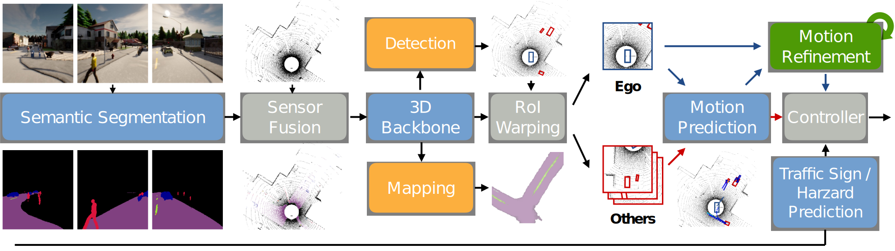

Learning from All Vehicles
CVPR 2022

Abstract
In this paper, we present a system to train driving policies from experiences collected not just from the ego-vehicle, but all vehicles that it observes. This system uses the behaviors of other agents to create more diverse driving scenarios without collecting additional data. The main difficulty in learning from other vehicles is that there is no sensor information. We use a set of supervisory tasks to learn an intermediate representation that is invariant to the viewpoint of the controlling vehicle. This not only provides a richer signal at training time but also allows more complex reasoning during inference. Learning how all vehicles drive helps predict their behavior at test time and can avoid collisions. We evaluate this system in closed-loop driving simulations. Our system outperforms all prior methods on the public CARLA Leaderboard by a wide margin, increasing driving score and route completion rate by 68% and 52% respectively.
Citation
If you find our paper, code or dataset useful, please cite us as:
@inproceedings{chen2022learning,
title={Learning from all vehicles},
author={Chen, Dian and Kr{\"a}henb{\"u}hl, Philipp},
booktitle={CVPR},
year={2022}
}
Video
Below shows videos of our visuomotor model driving. Adversarial scenarios spawn along the route, such as unexpected pedestrians, vehicle violating traffic lights at intersections etc. Try 2x speed if you think the videos are too slow!
Day time | Night time |
|---|---|
Videos also available on bilibili.
Code and Data
Code and data available on github.com/dotchen/LAV.
Website Template
The template for this website has been adopted from Carl Doersch.